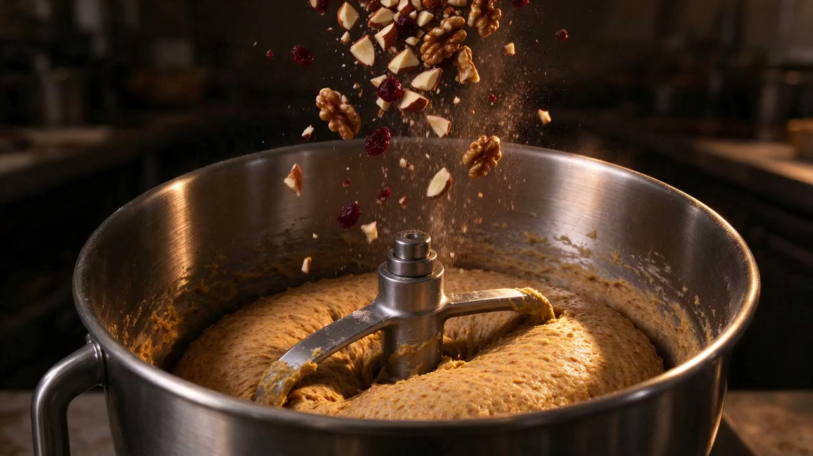
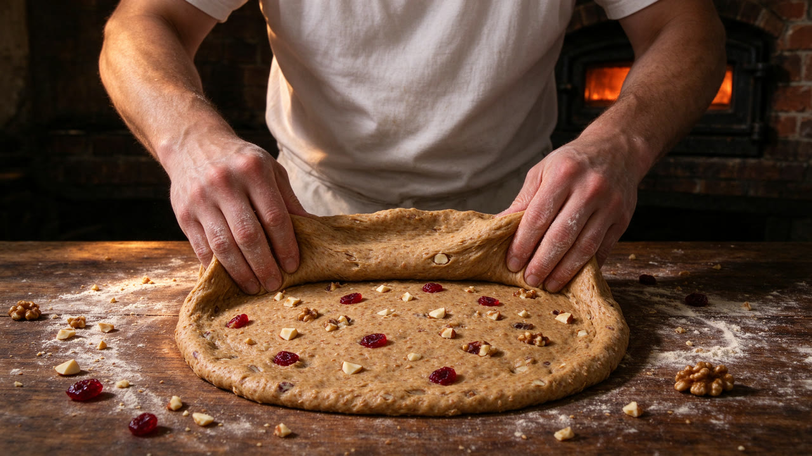
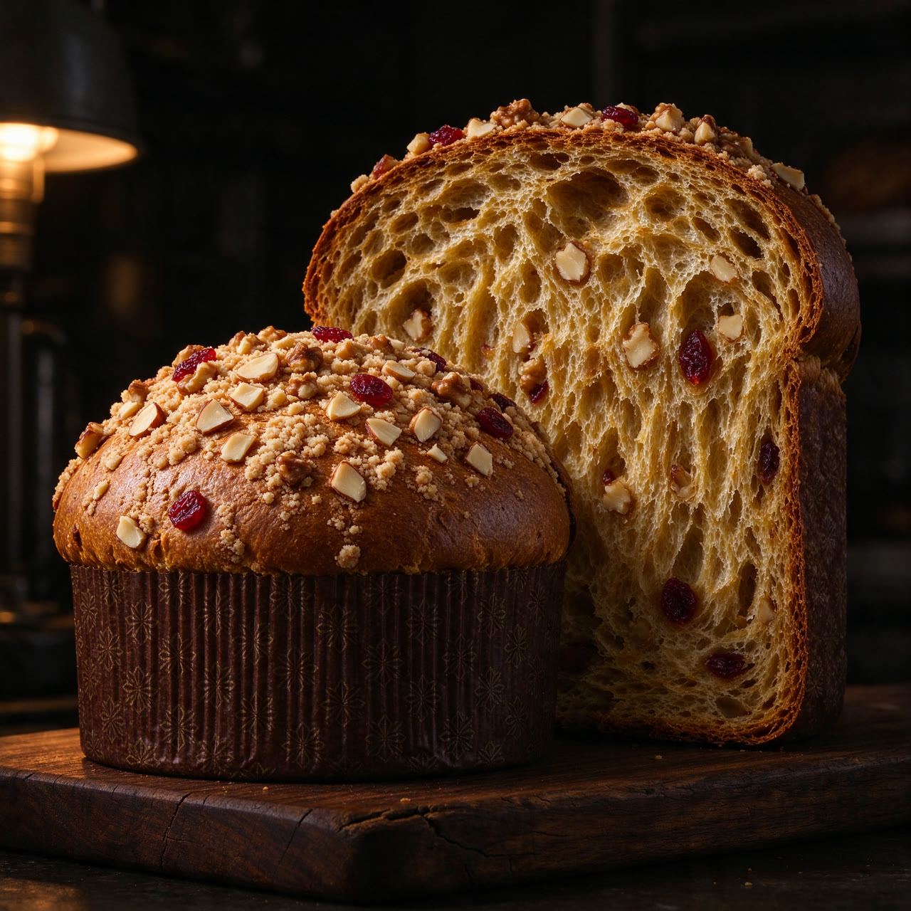
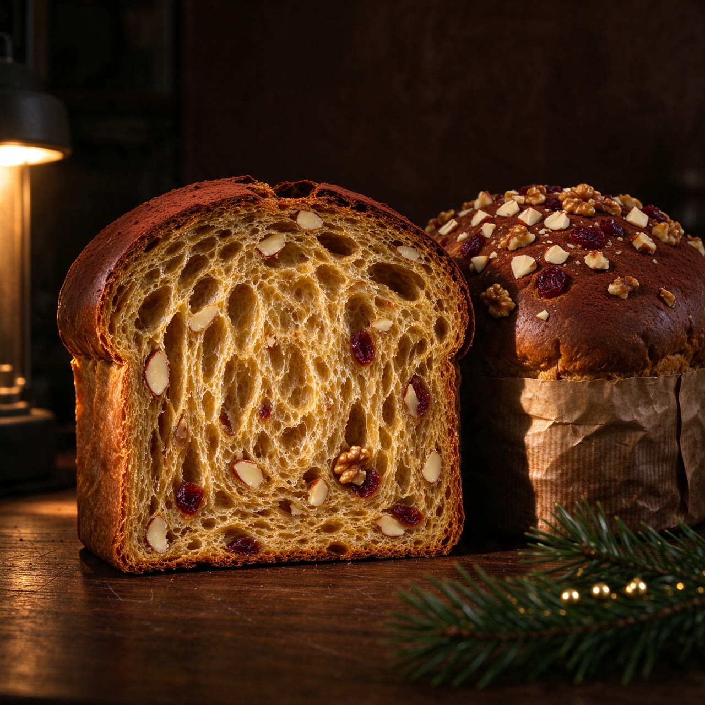
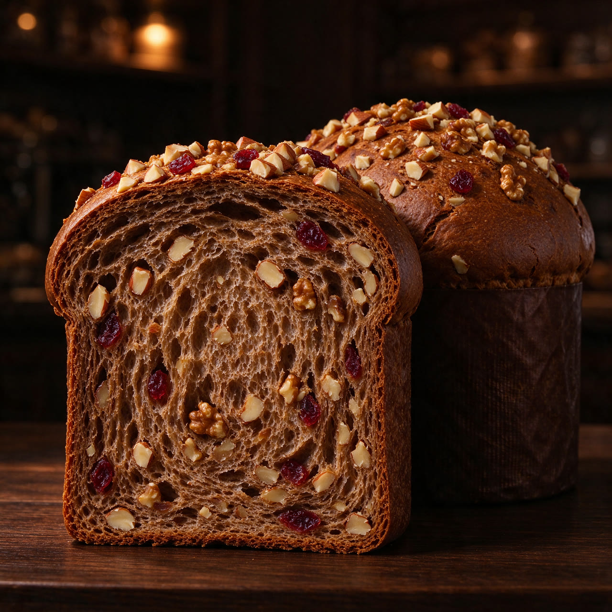

HANNA MIA · PREVENTA DE NAVIDAD
Nada aquí es rápido.
REPOSO LARGO
Setenta y dos horas de reposo.
Se refresca cada día, durante semanas, hasta que la masa pide amasarse otra vez.
LO QUE ENTRA
Cañihua tostada, frutos secos y arándanos.
La cañihua le da el sabor tostado; la fruta se dobla a mano en la masa para que cada corte tenga algo.
LOTE PEQUEÑO
Tandas cortas, una por semana.
Cada lote se hornea según lo que ya está reservado: nada de stock dormido.
Navidad con sabor que abraza.
Panetón Hanna Mia de 900 g: preventa S/ 35, precio regular S/ 45. Resérvalo antes de que se acabe el lote.
Reservar mi panetone
HANNA MIA · PREVENTA DE NAVIDAD
Navidad con sabor que abraza.
Panetón Hanna Mia de 900 g: preventa S/ 35, precio regular S/ 45. Resérvalo antes de que se acabe el lote.
Reservar mi panetoneEL OFICIO
Tres días para un pan dulce
Una masa madre que se refresca cada día durante semanas, enriquecida con harina de cañihua tostada. Dos amasados separados por horas de reposo controlado. Después el horno. Después lo colgamos boca abajo para que la miga se estire y la cúpula no se hunda.
El industrial lo hace en horas. Nosotros lo hacemos en días. Por eso cuesta más y por eso se nota al partirla.

Cañihua, arándanos y tres días de paciencia.
La masa se dobla a mano, con los frutos dentro. El horno espera al fondo.
LO QUE LLEVA
Tres cosas y ninguna más
Si la lista es larga, desconfía. Esta es entera.
-
Harina de cañihua
El ingrediente andino que lo cambia todo: sabor tostado sin dejar de ser panetón.
-
Huevos frescos
Yema entera. Es lo que deja la miga dorada y el perfume mantecoso.
-
Arándanos y frutos secos
Deshidratados y partidos, no confitados. Frente al panetón clásico, otra cosa.



TU TURNO
Amasa un poco
Mantén pulsado el botón. La masa respira cuando ya está. Suelta antes de tiempo y vuelve a empezar.
Al 0 %
A las 72 horas suelta el borde del bolde y respira. Ese es el momento.
CÓMO SE CUIDA
Se estropea por sed, no por prisa
- 01
Sin abrir
A temperatura ambiente, lejos del calor. La masa madre lo guarda semanas.
- 02
Una vez abierto
En su envoltorio o en bolsa hermética. En dos o tres días está en su punto.
- 03
Nunca en la nevera
El frío reseca la miga. Si sobra, calienta la porción unos segundos antes de servir.
PREGUNTAS
Lo que nos preguntan cada diciembre
- ¿Cuánto cuesta?
- S/ 45 por panetón de 900 g. En preventa, S/ 35 por tiempo limitado.
- ¿Cómo se reserva?
- Con el 50 % de adelanto por WhatsApp. Confirmamos tu fecha de entrega cuando cierre la tanda.
- ¿Hacen entregas?
- Sí: Ate y Lima Este, gratis desde 2 unidades en zonas definidas.
- ¿Cuánto dura?
- Semanas sin abrir; dos o tres días una vez abierto.
- ¿Qué alérgenos tiene?
- Trigo, huevo, leche y frutos secos.
PREVENTA DE NAVIDAD
Reserva el tuyo antes de que acabe el lote
El panetón Hanna Mia es de 900 g y sale en tandas de diciembre: preventa S/ 35, precio regular S/ 45. Déjanos tus datos y te escribimos por WhatsApp para confirmar el día.